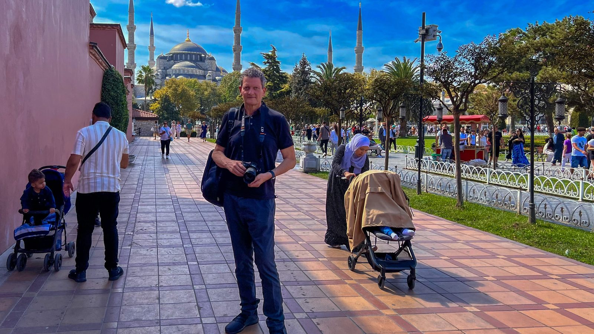
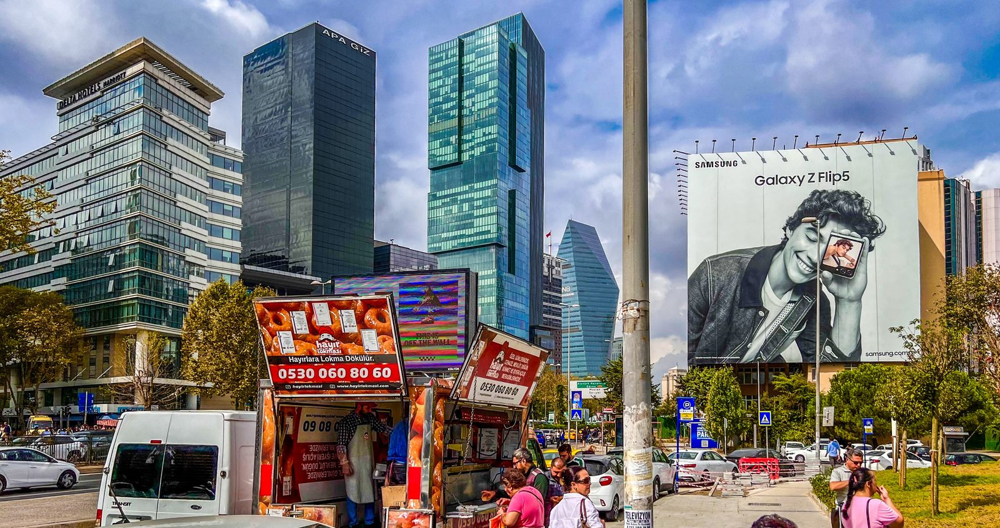
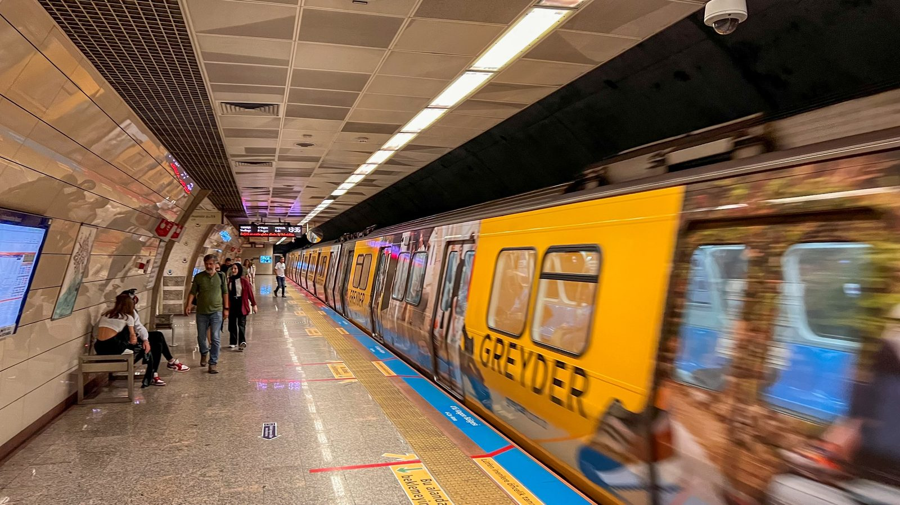
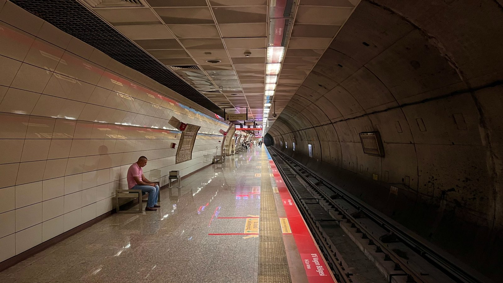
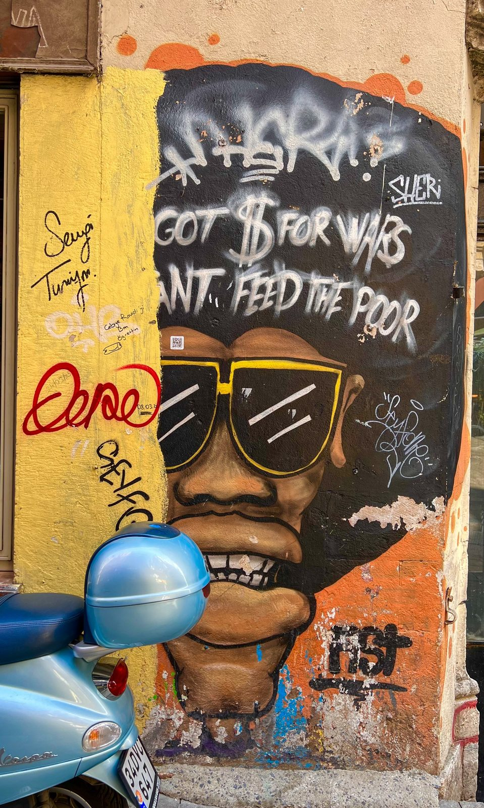
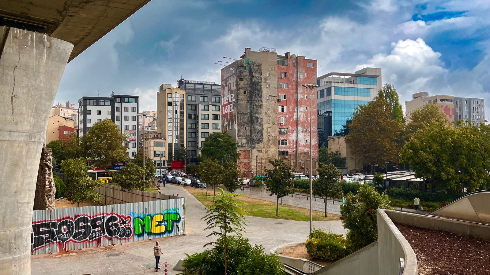
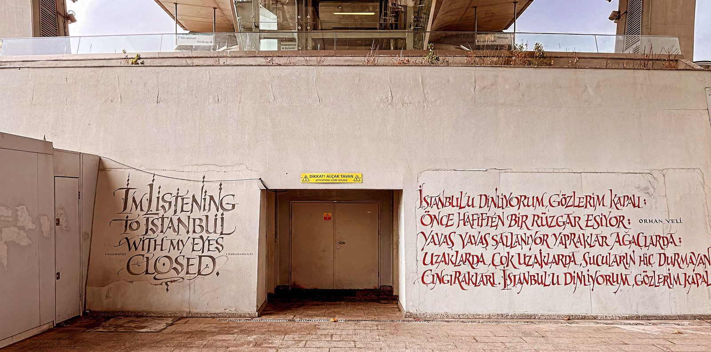
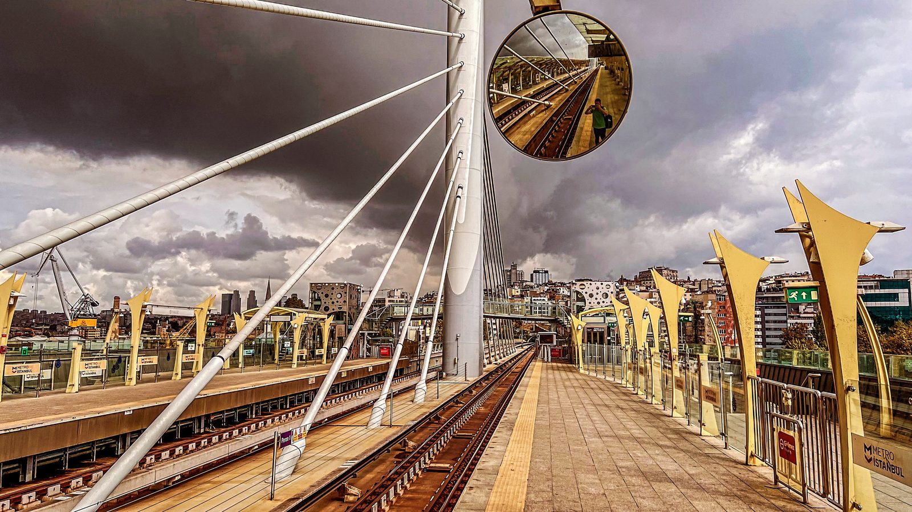
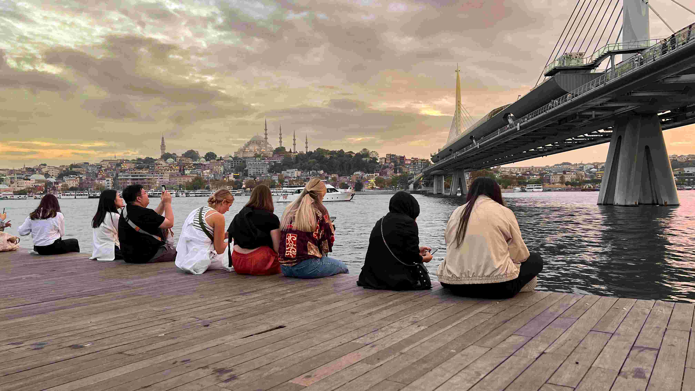

Es gibt Städte, die besucht man. Und es gibt Istanbul. Da kehrt man zurück, selbst wenn der letzte Besuch 33 Jahre her ist. 1990 stand ich zum ersten Mal hier: junger Kerl, analoge Kamera, eine Stadt voller Staub, voller Hupen, voller Händler, die einem Teppiche verkaufen wollten, bevor man den Koffer abgestellt hatte. September 2023, zweiter Anlauf: zwei Wochen, einmal komplett durchgespielt: von Nord nach Süd, von Ost nach West, von Europa nach Asien und zurück. Kostenpunkt der Kontinentalüberquerung: eine Fährkarte. Andere Städte haben Stadtteile, Istanbul hat Erdteile.
Und das Erste, was auffällt: Die Stadt von 1990 existiert noch. Sie hat nur ein Software-Update bekommen, das sich gewaschen hat. Moderner, weltoffener, selbstbewusster. Die Teppichhändler gibt es immer noch. Aber jetzt akzeptieren sie Apple Pay.
Sultanahmet: Wo 1001 Nacht wirklich wohnt
Natürlich fängt man in Sultanahmet an. Muss man. Die Blaue Moschee mit ihren sechs Minaretten ist eines dieser Bauwerke, bei denen die Kamera automatisch nach oben wandert und der Mund automatisch aufgeht. Seit über 400 Jahren derselbe Effekt, da kann kein Instagram-Filter mit. Ich stand auf dem Vorplatz zwischen Kinderwagen, zwischen Simit-Verkäufern, zwischen Menschen aus gefühlt achtzig Nationen, die Sony im Anschlag, und habe mich kurz gefragt, ob mein Ich von 1990 mich erkennen würde. Vermutlich ja. Am Kameragriff.

Levent: Das andere Istanbul
Wer glaubt, Istanbul sei nur Basar und Bosporus, sollte die Metro nach Levent nehmen. Dort stehen Glastürme, die sich vor Frankfurt nicht verstecken müssen. Davor, ganz selbstverständlich, ein Lokma-Truck, der frittierte Teigkringel in Sirup verkauft, während über allem eine Samsung-Werbung in Hauswandgröße prangt. Megacity und Straßenküche, Wolkenkratzer und Zuckersirup, alles auf einem Bild. Genau diese Gleichzeitigkeit ist Istanbul.

Untergrund mit Stil: Die Metro-Überraschung
Die vielleicht größte Veränderung seit 1990 fährt unterirdisch. Istanbuls Metro ist heute ein Netz, das sich sehen lassen kann. Sauber. Getaktet. Klimatisiert. Und fotogen, was man von deutschen Bahnsteigen eher selten behauptet. Ich habe mehr Zeit in Stationen verbracht als geplant, weil ständig irgendwo ein Bild wartete: die knallgelbe Bahn, die in die Kurve zischt. Die Frau in der Waggontür, gerahmt von einer Waschmittelwerbung, als hätte ein Galerist sie dort platziert. Der leere Bahnsteig, in dem sich die Deckenlichter spiegeln wie eine Startbahn.



Die Stadt als Leinwand
Und dann die Wände. Istanbul ist tätowiert: Street Art in den Gassen von Kadıköy und Karaköy, Kalligrafie an Betonmauern, Graffiti auf Bauzäunen. Mein Lieblingsfund: ein Mural mit Sonnenbrille und Afro und der Zeile „Got $ for wars, can't feed the poor". Davor parkte eine hellblaue Vespa, als hätte jemand das Bild absichtlich fertig komponiert. Ich habe nur noch abgedrückt und mich beim Wandbild bedankt.


Der schönste Moment dieser Kategorie wartete ausgerechnet an einem Metroausgang: Dort hat ein Kalligraf ein Gedicht von Orhan Veli an die Wand geschrieben, links auf Englisch, rechts auf Türkisch in blutrotem Duktus. „I'm listening to Istanbul with my eyes closed." Ich stand davor und dachte: genau so. Nur dass ich die Augen aufmachen musste, um es zu fotografieren.

Haliç: Meine Brücke, mein Abend
Wenn mich jemand fragt, wo Istanbul am meisten Istanbul ist, sage ich inzwischen: an der Haliç-Metrobrücke, kurz vor Sonnenuntergang. Oben auf der Station stand ich zwischen den gelben Masten, entdeckte einen Verkehrsspiegel. Darin ich, die Gleise, der Wolkenhimmel. Selfie auf die komplizierte Art. Unten am Ufer dann das eigentliche Schauspiel: Der Himmel dreht auf Orange, die Süleymaniye-Moschee wird zur Scherenschnitt-Silhouette, und auf den Holzplanken am Goldenen Horn sitzen sie alle nebeneinander: Kopftuch neben blonder Mähne, Tourist neben Teenager, alle mit demselben Blick nach Westen. Niemand redet viel. Muss auch nicht.



„1990 hat Istanbul mich überwältigt. 2023 hat es mich überzeugt. Das ist der Unterschied zwischen einem Abenteuer und einer Liebe."
Die Menschen: Der eigentliche Hauptdarsteller
Das Beste an diesen zwei Wochen waren nicht die Moscheen und nicht die Brücken. Es waren die Menschen. So viel Hilfsbereitschaft habe ich selten erlebt: Der Mann in der Metro, der aufstand, um mir den Umstieg zu erklären, komplett, mit Handzeichnung. Die Teestube, in der der zweite Çay aufs Haus ging, „weil du so schaust, als bräuchtest du ihn". Wildfremde, die mein Fotografieren mit einem Lächeln quittierten, nie mit Misstrauen. Istanbul ist eine Stadt mit knapp 16 Millionen Einwohnern, die sich anfühlt wie ein Dorf mit sehr, sehr vielen Nachbarn.
Fazit: Zwei Kontinente, ein Herzschlag
Zwei Wochen, einmal hoch und runter, quer und zurück. Istanbul 2023 ist eine Stadt, die ihre 1001 Nacht nicht ans Museum abgegeben hat. Sie hat ihr einfach eine Metro danebengestellt, dazu Street Art, dazu Wolkenkratzer, und lässt alles gleichzeitig laufen. Es war berauschend. Es war traumhaft. Und es war das beste Wiedersehen, das man nach 33 Jahren haben kann.
Mein Rat? Nimm zwei Wochen, nicht drei Tage. Kauf dir eine Istanbulkart, fahr Metro und Fähre kreuz und quer und steig irgendwo aus, wo kein Reiseführer hinzeigt. Und den Sonnenuntergang hebst du dir fürs Goldene Horn auf: Holzplanken, erste Reihe.
Warnung: Wer einmal auf zwei Kontinenten gefrühstückt hat, findet Städte mit nur einem plötzlich etwas … unterdimensioniert. Görüşürüz, Istanbul, wir sehen uns. Diesmal keine 33 Jahre.
📍 Istanbul auf Google MapsQuellen & Recherche
Diese Story basiert nicht nur auf eigenen Erinnerungen. Ein paar Fakten habe ich recherchiert und mit folgenden Quellen abgeglichen. Wer will, kann selbst nachlesen.